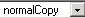

Die Funktion benötigt eine Cascading Style Sheet Datei. Dies ist sehr
nützlich, um Text und Seiten einfach und schnell zu formatieren.
Die Formate können zu Bilder, Text und Tabellen hinzugefügt werden. Sie müssen vor dem Hinzufügen eines Formates eine Auswahl im Editor vornehmen.